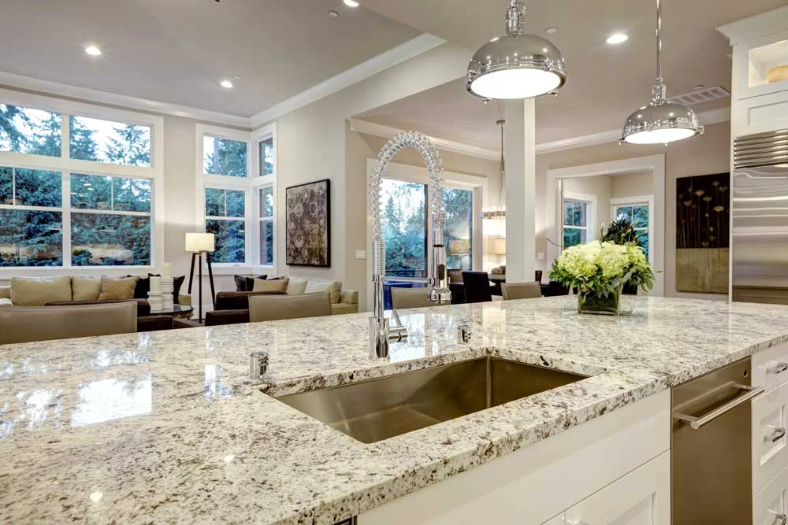
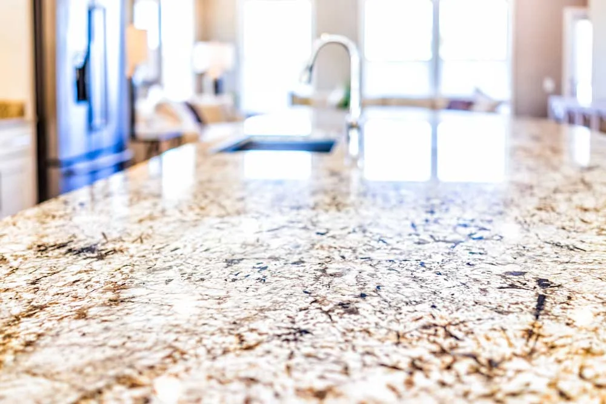

Real projects by Howard and his team. View the full gallery →
Howard Gerstner and his team work with nature's finest materials to create custom stone surfaces built to outlast the homes they are installed into.
Not every stone fabricator works with the full range of natural and engineered materials, and even fewer handle every application from mitered waterfall islands to floor-to-ceiling fireplace surrounds. Since 1984, Howard and his team have cut, polished, and installed stone in kitchens, bathrooms, living rooms, and landmark commercial properties across Utah—including the St. Regis Hotel at Deer Valley and the Huntsman Cancer Institute.
Every material has its own character. Howard helps you find the right match for your space, lifestyle, and budget, and accompanies you in person to Salt Lake wholesale slab yards.
The classic Utah workhorse for good reason. Rated 6 to 7 on the Mohs scale, granite is virtually scratch-proof, handles hot pans directly off the stove, and comes in sweeping white, gold, and charcoal slabs. Available in polished, honed, and leathered finishes.
Best for: Kitchen countertops, islands, outdoor kitchens
Learn More about Granite →Nothing duplicates the crystalline depth, cool pastry-making surface, and classic veining of genuine Carrara, Calacatta, and Statuario marble. We specialize in honed matte finishes for kitchens and bookmatched, mitered-edge installations for baths and fireplaces.
Best for: Statement islands, bathroom vanities, fireplace surrounds
Learn More about Marble →Often mistaken for marble, natural quartzite gives you luminous, sweeping veining with Mohs 7 hardness—harder than granite. Varieties like Taj Mahal, Super White, and Sea Pearl are top choices for luxury Utah kitchen remodels.
Best for: Luxury kitchens wanting marble aesthetics with high durability
Learn More about Quartzite →Engineered from 90% to 94% ground natural quartz crystal and polymer resins, quartz surfaces are non-porous, never need sealing, and deliver consistent color and pattern across your entire kitchen or bathroom.
Best for: Busy family kitchens, bathrooms, zero-sealing maintenance
Learn More about Quartz →Large-format sintered porcelain slabs are non-porous, heat-proof, scratch-resistant, and 100% UV-stable. They never need sealing and can be mitered for thick waterfall islands, full-height shower walls, and outdoor kitchens.
Best for: Outdoor kitchens, modern interiors, slab shower walls
Learn More about Porcelain & Quartz →Dark, dense, and naturally non-porous, soapstone never requires chemical sealers. It develops a rich charcoal patina over time and shrugs off hot cast-iron pans and acidic liquids. Howard has sourced specialty soapstone from Colorado and across the country for Utah homeowners.
Best for: Farmhouse, craftsman, and heritage kitchens
Onyx is prized for its natural translucency and dramatic color banding in amber, gold, emerald, and cream. Backlit with LED panels, a custom onyx bar top, powder room vanity, or feature wall becomes a true showpiece.
Best for: Backlit bar tops, fireplace surrounds, powder rooms
Warm, matte, and organic, limestone brings quiet architectural warmth to master bath vanities, soaking tub surrounds, and fireplace hearths. It pairs naturally with white oak, alder, and wrought iron.
Best for: Bathroom vanities, tub decks, fireplace surrounds
Howard and his team install custom stonework throughout the home—with tight seams, grain-matched mitered edges, and exact cutouts.
In-home templating, bookmatched seams, 45-degree mitered waterfall edges, undermount sink cutouts, and cooktop openings all fabricated in-house.
Single and double sink vanity tops, custom backsplashes, and precision undermount cutouts in marble, granite, quartzite, quartz, and limestone.
From single-slab hearths to floor-to-ceiling bookmatched fireplace surrounds in Salt Lake, Utah County, and Park City homes.
Continuous slab backsplashes behind ranges and custom-proportioned stone mantles cut from the same slab as your countertops or hearth.
Full slab shower walls, custom shower benches, curb caps, and recessed niches with watertight seams and zero tile grout lines to scrub.
Custom marble, limestone, and quartz bathtub decks and aprons that bring spa-level durability and warmth to master bathrooms.
Custom dining table slabs, conference tables, and UV-stable granite and porcelain outdoor kitchen countertops built for Utah's four-season climate.
Basement wet bars, window sills, laundry counters, mudroom benches, and commercial hospitality and medical installations.
We specialize exclusively in custom stone, and if your project requires a full-scale renovation, we recommend DreamMaker Bath & Kitchen of Utah Valley for full-service design-build remodeling.
Visit DreamMaker Bath & Kitchen

Real projects by Howard and his team. View the full gallery →
Call Howard directly to talk through your project. He will come to your home, take measurements, meet you at the slab yard, and give you a clear, no-pressure quote.